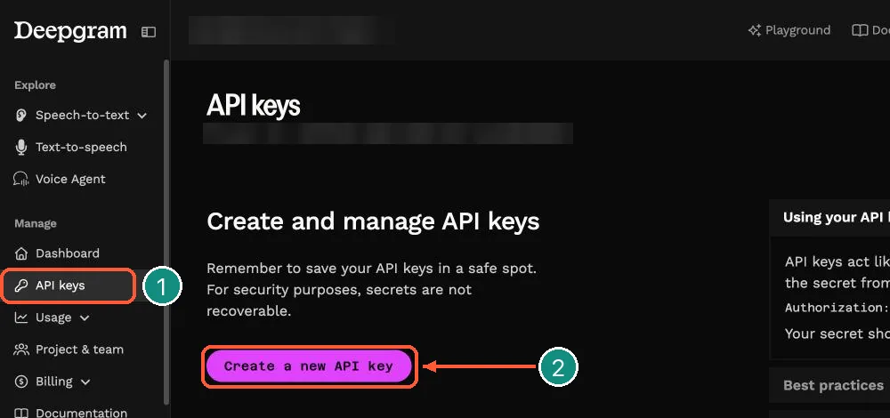
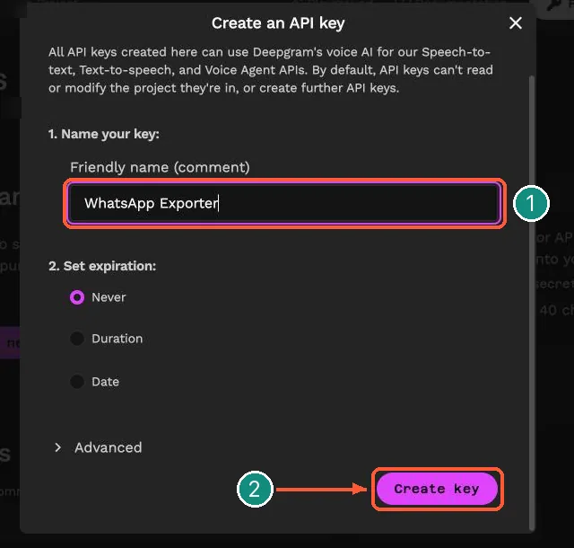

Get your Deepgram key in three minutes.
WhatsApp Exporter can turn voice notes into text with Deepgram, a speech-to-text service. It needs a key, which is like a password that lets it use your Deepgram account.
-
Open Deepgram and sign up
Keep the WhatsApp Exporter window open. Click the button below. It opens in a new tab.
Open console.deepgram.com ↗Sign up with Google or your email. New accounts get $200 of free credit, which covers hundreds of hours of voice notes. If you already have an account, click Log in instead.
-
Go to API keys
In the menu on the left, under Manage, click API keys. Then click Create a new API key.

The API keys page. The Create API key button on the Dashboard opens the same box. -
Name it and click Create key
A box called Create an API key opens. Type WhatsApp Exporter under Friendly name. Leave expiration on Never and don't open Advanced. Scroll down in the box and click Create key.

The Create key button is at the bottom of the box. -
Copy the key
Your new key appears. Click Copy next to it.
console.deepgram.comYour new API key
Copy it now. You won't see it again.••••••••••••••••••••••••••••••••CopyThe key is shown once. Copy it now. The key is shown only once. If you close the box before copying it, just create another one. -
Paste it into WhatsApp Exporter
Go back to the WhatsApp Exporter window. Paste with ⌘ VCtrl V, then press Enter.
Paste your Deepgram API key, or press Enter to skip voice notes: ✔ Deepgram key works
When you see “Deepgram key works”, you're done. Nothing appears while you paste. That's normal: the key stays hidden on screen. Paste once and press Enter.
If something goes wrong
It says “That Deepgram key didn't work”
Copy the key again with the Copy button rather than selecting it by hand, so no part is missed. Then paste it once and press Enter. If it still fails, create a new key and try that one.
It says “Couldn't reach Deepgram just now”
Check your internet connection. The exporter tries again during the export.
I closed the box before copying the key
Click Create a new API key again and make a new one. You can delete the old one from the list on the API keys page.
Is my key safe?
Treat it like a password and don't share it. WhatsApp Exporter uses it only while it runs and doesn't save it. You can delete the key on the API keys page at any time, and it stops working straight away.
Do I need this?
No. It's only for turning voice notes into text. Press Enter to skip, and voice notes are saved without a written version. In a redacted copy they're removed.